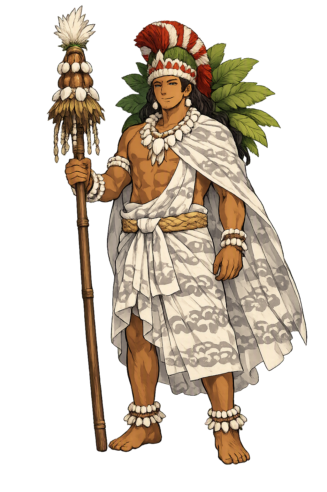

The Living Myth
Agriculture, Peace, Rain · Hawaiian deity, associated with fertility, agriculture, rainfall, music and peace

Stories of Lono
Lono's stories are Hawaiʻi's seasonal memory: a chief who lost his wife and sailed away to Kahiki promising return, and a god who returns every year as the Makahiki — the months when rain, games, and taxation replace war. When Cook sailed into Kealakekua Bay during the festival, the myth was already waiting for him.
Among the chiefly legends preserved by Kamakau and Beckwith, Lono-i-ka-makahiki is a chief of Kaʻawaloa in the Kona district of Hawaiʻi island, whose story became the god's. His wife is the beautiful Kaikilani; a jealous rival fabricates reports of her infidelity, and Lono — believing the lie — kills her, learning the truth too late (Kamakau, Ruling Chiefs of Hawaiʻi). Maddened by grief, he wanders the island, boxing and wrestling his way around the coast, until he boards a canoe at Kealakekua and sails for Kahiki, promising to return. The people say the Makahiki is that return: the god comes back each year when the Pleiades rise, and the season of his circuit is the season of peace. Beckwith's variant (Hawaiian Mythology, ch. 15) reshapes the tale within Pele's circle — a reminder that the legend grew in more than one telling, and that its fixed point is the departure and the promise, not any single version of the crime.
The Makahiki, the Hawaiian New Year festival, is Lono's season and his biography performed. When the Pleiades (Makaliʻi) appeared at sunset, the temples closed to war and the image of the long god (akua loa) — a tall staff hung with feathered emblems — was carried around each island counterclockwise, district by district (Malo, Hawaiian Antiquities, ch. 33; Kamakau, The Works of the People of Old). At every ahupuaʻa boundary the procession halted at the ahu platform, where a pig was offered and the ruling chief's collectors gathered the Makahiki tribute, the hoʻokupu that funded the court's year. Boxing, surfing, and spear-dancing filled the days, and ordinary disputes were set aside until the god had passed. For four months, taxation itself was liturgy: the god circled the land, and the land's wealth circled with him. When the image was lifted back into the temple at the season's end, war could resume — the myth's own answer to what holds a kingdom together when no enemy threatens.
On 17 January 1779, in the middle of the Makahiki season, James Cook sailed into Kealakekua Bay, and Hawaiians had a story already shaped for him. Priests conducted the white stranger to the great heiau of Hikiau as Lono makua returned from Kahiki; offerings were laid before him, he was anointed, and the British spent a month in the god's retinue — an identification the expedition's journals record with visible discomfort (Cook, ed. Beaglehole; Kamakau, Ruling Chiefs of Hawaiʻi). Whether the Hawaiians truly believed Cook was Lono, or were performing the season's own grammar upon an arrival, remains the famous dispute: Sahlins reads the reception as structurally exact, Obeyesekere as European myth-making projected onto the scene. Either way the episode shows a myth acting in real time — an arrival rehearsed in ceremony for a thousand years, at last keeping its appointment.
When Cook returned to Kealakekua in February 1779 with a broken mast, the season had turned and the bay was crowded; a cutter was stolen from the Discovery, and in the quarrel that followed Cook was struck down on the beach at Kaʻawaloa on 14 February. The god had been killed — and the sources disagree about what that meant. Sahlins argues the death completed the Makahiki's logic: the god arrives, is honored, and departs violently, and Cook's remains, divided among the chiefs, became relics rather than a corpse. Obeyesekere denies the apotheosis entirely. Kamakau's account is cooler: the chief Kalaniʻōpuʻu treated the body as that of a great chief, and the bones were eventually returned. Whatever happened on the beach, the myth had ended as the season ends — with the god gone and the people expecting him back.
Agriculture
Lono is the Hawaiian god of fertility, agriculture, rainfall, music, and peace — the deity of the Makahiki season, when war was forbidden and the feathered image of the long god made its circuit of every island collecting tribute. His name is the ordinary Hawaiian word for news and tidings, as if the arriving god were good news himself.
The akua loa — the long, feathered image of Lono — was carried counterclockwise around each island for four months of peace, games, and tribute (Malo, Hawaiian Antiquities, ch. 33).
His cloudburst watered the dry leeward fields; under his star the people planted ʻuala, sweet potato, and the year turned from war to husbandry.
During Lono's months the temples closed to war and the aliʻi gathered the Makahiki tax — a season when law was the god's own itinerary.
Preserved as a flagship temple; a pre-literate name first written by mission scribes in the 1820s, restored here to Polynesian dignity.
From the original script to the living URL
Lono
The name survives in scholarly transliteration. Lono is the standard Polynesian romanisation, documented in academic sources — “Hawaiian deity, associated with fertility, agriculture, rainfall, music and peace”. Because the spelling uses only Latin letters, the form is the same in both ASCII and Unicode.
No indigenous writing system is securely attested for individual polynesian names. The form shown is a modern scholarly transliteration.
lono
The plain lono form is identical to the Unicode restoration. Because this name is already written in Latin letters, no diacritics, stress, or script information were lost — only capitalization differs.
Lono
The Unicode restoration does not need to recover lost marks for Lono. Its value is canonical spelling and consistent cataloguing, not the reconstruction of erased orthography. The domain is readable as-is to both DNS and humanity.
Lono.com
This restoration is written entirely in ASCII letters — no Punycode encoding stands between Lono and the DNS. The domain reads identically to machines and to human eyes.
Owned, ideal, and ASCII forms of Lono
Lono
The full Unicode restoration. lono.com is not in the PuniCodex collection — it is watched for release; if it drops, this temple upgrades to an owned flagship.
How Lono was spoken
How Lono is preserved in writing
No indigenous writing system is securely attested for individual polynesian names. The form shown is a modern scholarly transliteration.
Contribute scholarly provenance →Lono is the god who comes back — and that is nearly the whole of him. He does not rule from a fixed temple; he arrives, stays four months, and leaves, and the year is built around his absence as much as his presence. In this he is almost unique among the great gods of the world: a deity whose defining quality is returnability. When Cook sailed in during the Makahiki, the Hawaiians did not need to invent anything. Myth had already written the scene: the god lands from across the sea, is received by the chiefs and priests, and then — the season being over — is let go. It is among the most honest creations any people made of their relationship with power: the blessings arrive seasonally, the taxes are gathered religiously, and the god, like rain, is trusted because he has always come back before. To live under Lono is to live in a world where peace has a schedule, and where hope is not optimism but calendrical fact.
Enter Extended Lore